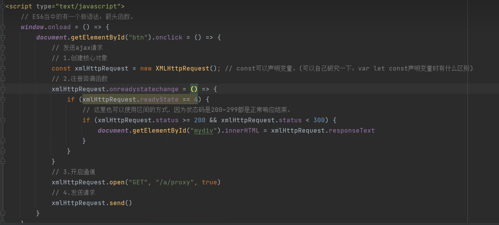

CORS策略阻止，ajax请求被同源策略阻止
跨域的根本原因：不允许共享XMLHttpRequest，共享同一个XMLHttpRequest对象是不安全的
同源策略：浏览器的安全策略，协议域名，端口号三个要素都一致才算同源
1. 设置响应头
服务端响应头设置允许跨域请求
实现：response.setHeader("Access-Control-Allow-Origin", "http://localhost:8080");
解释：第一个是权限，第二个是允许的地址，允许同源的8080端口访问，如果是"*"则允许所有人
2. jsonp
jsonp: json with padding (带填充的json，学完再理解)
不是Ajax请求，只不过可以完成ajax的局部刷新效果，可以说是一种类ajax请求的机制
实现：<script type="application/javascript" src="跨域地址"></script>
利用script标签可以跨域请求的特点进行访问，且只支持get请求，不过要是返回js代码就快乐了
3. jQuery封装的jQuery
是方案2的高度封装，底层原理相同，导包用就行了
<script src="https://apps.bdimg.com/libs/jquery/2.1.4/jquery.min.js"></script>
4. ajax代理
让别人代我访问，再把东西给我就行
如何使用java程序发送get/post请求？（本质是HTTP请求）：
方案一：使用JDK内置的API（java.net.URL...），这些API是可以发送HTTP请求
方案二：使用第三方开源组件，eg：apache的httpclient组件（开源免费可以直接使用）
在java程序中，使用httpclieng组件可以发送http组件，目前可以不深入研究，可以从网上直接搜索，改一改


5. nginx代理
也是使用了这种代理机制完成ajax的跨域，实现也简单，只要修改一个nginx的配置即可
之后再说